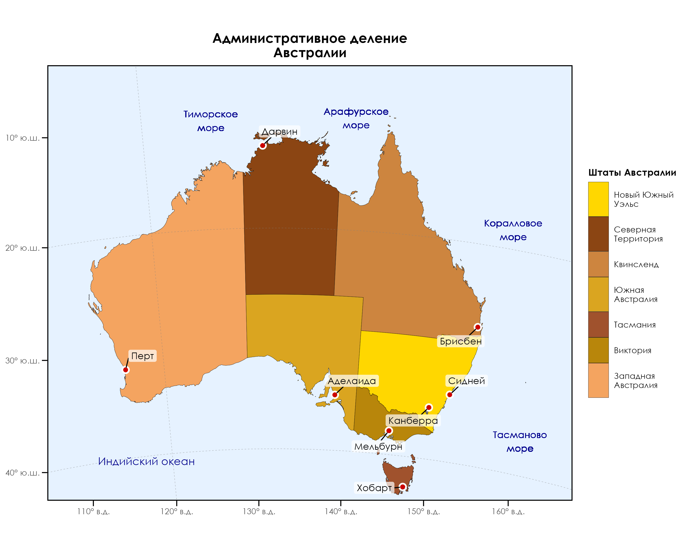

итог предоперации
Linking to GEOS 3.13.0, GDAL 3.10.1, PROJ 9.5.1; sf_use_s2() is TRUE
Attaching package: 'dplyr'The following objects are masked from 'package:stats':
filter, lagThe following objects are masked from 'package:base':
intersect, setdiff, setequal, unionRegistering fonts with RLoading required package: sysfontsLoading required package: showtextdb
Attaching package: 'showtextdb'The following object is masked from 'package:extrafont':
font_installКакие драйверы поддерживаются?
| name | long_name | write | copy | is_raster | is_vector | vsi | |
|---|---|---|---|---|---|---|---|
| ESRI Shapefile | ESRI Shapefile | ESRI Shapefile | TRUE | FALSE | FALSE | TRUE | TRUE |
| ESRIJSON | ESRIJSON | ESRIJSON | FALSE | FALSE | FALSE | TRUE | TRUE |
Проверка доступных шрифтов
if (!"Century Gothic" %in% fonts()) {
message("Шрифт Century Gothic не найден, попробуем загрузить... Очень нужно!")
} else { message("Шрифт уже загружен. Наименование - ",
main_font <- "Century Gothic")
}Шрифт Century Gothic не найден, попробуем загрузить... Очень нужно!Функция проверки и загрузки Century Gothic
check_and_load_century_gothic <- function() {
font_name <- "Century Gothic"
#1. Проверка наличия в системе
if (font_name %in% system_fonts()$family) {
message("✅ Шрифт ", font_name, "' уже установлен")
return(invisible(TRUE))
}
#2. Если нет - загружаем
message("⚠️ Шрифт ", font_name, "' не найден. Пробуем установить...")
font_path <- ".CenturyGothic.ttf" # Укажите правильный путь!
if (!file.exists(font_path)) {
message("❌ Файл ", font_path, "' не найден")
return(invisible(FALSE))
}
#3. Установка шрифта
font_add(font_name, font_path)
showtext_auto()
# 4. Подтверждение
message("✔ Шрифт успешно загружен из: ", normalizePath(font_path))
invisible(TRUE)
}Вызов функции
✅ Шрифт Century Gothic' уже установленИначе самое принудительное (долгая загрузка, импорт шрифтов)
NULLПуть к данным Natural Earth
# root <- "C:/GIS/2 homework/data"
root <- "D:/users/platt/shapefile/auxiliary/naturalearth/5.1.2"
#"Проверка доступных файлов
available_shapes <- list.files(root, pattern = "\\.shp(\\.zip)*$",recursive=TRUE)
print(available_shapes) [1] "10m_cultural/ne_10m_admin_0_antarctic_claim_limit_lines.shp.zip"
[2] "10m_cultural/ne_10m_admin_0_antarctic_claims.shp.zip"
[3] "10m_cultural/ne_10m_admin_0_boundary_lines_disputed_areas.shp.zip"
[4] "10m_cultural/ne_10m_admin_0_boundary_lines_land.shp.zip"
[5] "10m_cultural/ne_10m_admin_0_boundary_lines_map_units.shp.zip"
[6] "10m_cultural/ne_10m_admin_0_boundary_lines_maritime_indicator.shp.zip"
[7] "10m_cultural/ne_10m_admin_0_boundary_lines_maritime_indicator_chn.shp.zip"
[8] "10m_cultural/ne_10m_admin_0_countries.shp.zip"
[9] "10m_cultural/ne_10m_admin_0_countries_arg.shp.zip"
[10] "10m_cultural/ne_10m_admin_0_countries_bdg.shp.zip"
[11] "10m_cultural/ne_10m_admin_0_countries_bra.shp.zip"
[12] "10m_cultural/ne_10m_admin_0_countries_chn.shp.zip"
[13] "10m_cultural/ne_10m_admin_0_countries_deu.shp.zip"
[14] "10m_cultural/ne_10m_admin_0_countries_egy.shp.zip"
[15] "10m_cultural/ne_10m_admin_0_countries_esp.shp.zip"
[16] "10m_cultural/ne_10m_admin_0_countries_fra.shp.zip"
[17] "10m_cultural/ne_10m_admin_0_countries_gbr.shp.zip"
[18] "10m_cultural/ne_10m_admin_0_countries_grc.shp.zip"
[19] "10m_cultural/ne_10m_admin_0_countries_idn.shp.zip"
[20] "10m_cultural/ne_10m_admin_0_countries_ind.shp.zip"
[21] "10m_cultural/ne_10m_admin_0_countries_iso.shp.zip"
[22] "10m_cultural/ne_10m_admin_0_countries_isr.shp.zip"
[23] "10m_cultural/ne_10m_admin_0_countries_ita.shp.zip"
[24] "10m_cultural/ne_10m_admin_0_countries_jpn.shp.zip"
[25] "10m_cultural/ne_10m_admin_0_countries_kor.shp.zip"
[26] "10m_cultural/ne_10m_admin_0_countries_lakes.shp.zip"
[27] "10m_cultural/ne_10m_admin_0_countries_mar.shp.zip"
[28] "10m_cultural/ne_10m_admin_0_countries_nep.shp.zip"
[29] "10m_cultural/ne_10m_admin_0_countries_nld.shp.zip"
[30] "10m_cultural/ne_10m_admin_0_countries_pak.shp.zip"
[31] "10m_cultural/ne_10m_admin_0_countries_pol.shp.zip"
[32] "10m_cultural/ne_10m_admin_0_countries_prt.shp.zip"
[33] "10m_cultural/ne_10m_admin_0_countries_pse.shp.zip"
[34] "10m_cultural/ne_10m_admin_0_countries_rus.shp.zip"
[35] "10m_cultural/ne_10m_admin_0_countries_sau.shp.zip"
[36] "10m_cultural/ne_10m_admin_0_countries_swe.shp.zip"
[37] "10m_cultural/ne_10m_admin_0_countries_tlc.shp.zip"
[38] "10m_cultural/ne_10m_admin_0_countries_tur.shp.zip"
[39] "10m_cultural/ne_10m_admin_0_countries_twn.shp.zip"
[40] "10m_cultural/ne_10m_admin_0_countries_ukr.shp.zip"
[41] "10m_cultural/ne_10m_admin_0_countries_usa.shp.zip"
[42] "10m_cultural/ne_10m_admin_0_countries_vnm.shp.zip"
[43] "10m_cultural/ne_10m_admin_0_disputed_areas.shp.zip"
[44] "10m_cultural/ne_10m_admin_0_disputed_areas_scale_rank_minor_islands.shp.zip"
[45] "10m_cultural/ne_10m_admin_0_label_points.shp.zip"
[46] "10m_cultural/ne_10m_admin_0_map_subunits.shp.zip"
[47] "10m_cultural/ne_10m_admin_0_map_units.shp.zip"
[48] "10m_cultural/ne_10m_admin_0_names.shp.zip"
[49] "10m_cultural/ne_10m_admin_0_pacific_groupings.shp.zip"
[50] "10m_cultural/ne_10m_admin_0_scale_rank.shp.zip"
[51] "10m_cultural/ne_10m_admin_0_scale_rank_minor_islands.shp.zip"
[52] "10m_cultural/ne_10m_admin_0_seams.shp.zip"
[53] "10m_cultural/ne_10m_admin_0_sovereignty.shp.zip"
[54] "10m_cultural/ne_10m_admin_1_label_points.shp.zip"
[55] "10m_cultural/ne_10m_admin_1_label_points_details.shp.zip"
[56] "10m_cultural/ne_10m_admin_1_seams.shp.zip"
[57] "10m_cultural/ne_10m_admin_1_states_provinces.shp.zip"
[58] "10m_cultural/ne_10m_admin_1_states_provinces_lakes.shp.zip"
[59] "10m_cultural/ne_10m_admin_1_states_provinces_lines.shp.zip"
[60] "10m_cultural/ne_10m_admin_1_states_provinces_scale_rank.shp.zip"
[61] "10m_cultural/ne_10m_admin_1_states_provinces_scale_rank_minor_islands.shp.zip"
[62] "10m_cultural/ne_10m_admin_2_counties.shp.zip"
[63] "10m_cultural/ne_10m_admin_2_counties_lakes.shp.zip"
[64] "10m_cultural/ne_10m_admin_2_counties_lines.shp.zip"
[65] "10m_cultural/ne_10m_admin_2_counties_scale_rank.shp.zip"
[66] "10m_cultural/ne_10m_admin_2_counties_scale_rank_minor_islands.shp.zip"
[67] "10m_cultural/ne_10m_admin_2_counties_to_match.shp.zip"
[68] "10m_cultural/ne_10m_admin_2_label_points.shp.zip"
[69] "10m_cultural/ne_10m_admin_2_label_points_details.shp.zip"
[70] "10m_cultural/ne_10m_airports.shp.zip"
[71] "10m_cultural/ne_10m_parks_and_protected_lands_area.shp.zip"
[72] "10m_cultural/ne_10m_parks_and_protected_lands_line.shp.zip"
[73] "10m_cultural/ne_10m_parks_and_protected_lands_point.shp.zip"
[74] "10m_cultural/ne_10m_parks_and_protected_lands_scale_rank.shp.zip"
[75] "10m_cultural/ne_10m_populated_places.shp.zip"
[76] "10m_cultural/ne_10m_populated_places_simple.shp.zip"
[77] "10m_cultural/ne_10m_ports.shp.zip"
[78] "10m_cultural/ne_10m_railroads.shp.zip"
[79] "10m_cultural/ne_10m_railroads_north_america.shp.zip"
[80] "10m_cultural/ne_10m_roads.shp.zip"
[81] "10m_cultural/ne_10m_roads_north_america.shp.zip"
[82] "10m_cultural/ne_10m_time_zones.shp.zip"
[83] "10m_cultural/ne_10m_urban_areas.shp.zip"
[84] "10m_cultural/ne_10m_urban_areas_landscan.shp.zip"
[85] "10m_physical/ne_10m_antarctic_ice_shelves_lines.shp.zip"
[86] "10m_physical/ne_10m_antarctic_ice_shelves_polys.shp.zip"
[87] "10m_physical/ne_10m_bathymetry_A_10000.shp.zip"
[88] "10m_physical/ne_10m_bathymetry_B_9000.shp.zip"
[89] "10m_physical/ne_10m_bathymetry_C_8000.shp.zip"
[90] "10m_physical/ne_10m_bathymetry_D_7000.shp.zip"
[91] "10m_physical/ne_10m_bathymetry_E_6000.shp.zip"
[92] "10m_physical/ne_10m_bathymetry_F_5000.shp.zip"
[93] "10m_physical/ne_10m_bathymetry_G_4000.shp.zip"
[94] "10m_physical/ne_10m_bathymetry_H_3000.shp.zip"
[95] "10m_physical/ne_10m_bathymetry_I_2000.shp.zip"
[96] "10m_physical/ne_10m_bathymetry_J_1000.shp.zip"
[97] "10m_physical/ne_10m_bathymetry_K_200.shp.zip"
[98] "10m_physical/ne_10m_bathymetry_L_0.shp.zip"
[99] "10m_physical/ne_10m_coastline.shp.zip"
[100] "10m_physical/ne_10m_geographic_lines.shp.zip"
[101] "10m_physical/ne_10m_geography_marine_polys.shp.zip"
[102] "10m_physical/ne_10m_geography_regions_elevation_points.shp.zip"
[103] "10m_physical/ne_10m_geography_regions_points.shp.zip"
[104] "10m_physical/ne_10m_geography_regions_polys.shp.zip"
[105] "10m_physical/ne_10m_glaciated_areas.shp.zip"
[106] "10m_physical/ne_10m_graticules_1.shp.zip"
[107] "10m_physical/ne_10m_graticules_10.shp.zip"
[108] "10m_physical/ne_10m_graticules_15.shp.zip"
[109] "10m_physical/ne_10m_graticules_20.shp.zip"
[110] "10m_physical/ne_10m_graticules_30.shp.zip"
[111] "10m_physical/ne_10m_graticules_5.shp.zip"
[112] "10m_physical/ne_10m_lakes.shp.zip"
[113] "10m_physical/ne_10m_lakes_australia.shp.zip"
[114] "10m_physical/ne_10m_lakes_europe.shp.zip"
[115] "10m_physical/ne_10m_lakes_historic.shp.zip"
[116] "10m_physical/ne_10m_lakes_north_america.shp.zip"
[117] "10m_physical/ne_10m_lakes_pluvial.shp.zip"
[118] "10m_physical/ne_10m_land.shp.zip"
[119] "10m_physical/ne_10m_land_ocean_label_points.shp.zip"
[120] "10m_physical/ne_10m_land_ocean_seams.shp.zip"
[121] "10m_physical/ne_10m_land_scale_rank.shp.zip"
[122] "10m_physical/ne_10m_land_scale_rank2.shp.zip"
[123] "10m_physical/ne_10m_minor_islands.shp.zip"
[124] "10m_physical/ne_10m_minor_islands_coastline.shp.zip"
[125] "10m_physical/ne_10m_minor_islands_label_points.shp.zip"
[126] "10m_physical/ne_10m_minor_islands2.shp.zip"
[127] "10m_physical/ne_10m_ocean.shp.zip"
[128] "10m_physical/ne_10m_ocean_scale_rank.shp.zip"
[129] "10m_physical/ne_10m_playas.shp.zip"
[130] "10m_physical/ne_10m_reefs.shp.zip"
[131] "10m_physical/ne_10m_rivers_australia.shp.zip"
[132] "10m_physical/ne_10m_rivers_europe.shp.zip"
[133] "10m_physical/ne_10m_rivers_lake_centerlines.shp.zip"
[134] "10m_physical/ne_10m_rivers_lake_centerlines_scale_rank.shp.zip"
[135] "10m_physical/ne_10m_rivers_north_america.shp.zip"
[136] "10m_physical/ne_10m_wgs84_bounding_box.shp.zip"
[137] "110m_cultural/ne_110m_admin_0_boundary_lines_land.shp.zip"
[138] "110m_cultural/ne_110m_admin_0_countries.shp.zip"
[139] "110m_cultural/ne_110m_admin_0_countries_lakes.shp.zip"
[140] "110m_cultural/ne_110m_admin_0_map_units.shp.zip"
[141] "110m_cultural/ne_110m_admin_0_pacific_groupings.shp.zip"
[142] "110m_cultural/ne_110m_admin_0_scale_rank.shp.zip"
[143] "110m_cultural/ne_110m_admin_0_sovereignty.shp.zip"
[144] "110m_cultural/ne_110m_admin_0_tiny_countries.shp.zip"
[145] "110m_cultural/ne_110m_admin_1_states_provinces.shp.zip"
[146] "110m_cultural/ne_110m_admin_1_states_provinces_lakes.shp.zip"
[147] "110m_cultural/ne_110m_admin_1_states_provinces_lines.shp.zip"
[148] "110m_cultural/ne_110m_admin_1_states_provinces_scale_rank.shp.zip"
[149] "110m_cultural/ne_110m_populated_places.shp.zip"
[150] "110m_cultural/ne_110m_populated_places_simple.shp.zip"
[151] "110m_physical/ne_110m_coastline.shp.zip"
[152] "110m_physical/ne_110m_geographic_lines.shp.zip"
[153] "110m_physical/ne_110m_geography_marine_polys.shp.zip"
[154] "110m_physical/ne_110m_geography_regions_elevation_points.shp.zip"
[155] "110m_physical/ne_110m_geography_regions_points.shp.zip"
[156] "110m_physical/ne_110m_geography_regions_polys.shp.zip"
[157] "110m_physical/ne_110m_glaciated_areas.shp.zip"
[158] "110m_physical/ne_110m_graticules_1.shp.zip"
[159] "110m_physical/ne_110m_graticules_10.shp.zip"
[160] "110m_physical/ne_110m_graticules_15.shp.zip"
[161] "110m_physical/ne_110m_graticules_20.shp.zip"
[162] "110m_physical/ne_110m_graticules_30.shp.zip"
[163] "110m_physical/ne_110m_graticules_5.shp.zip"
[164] "110m_physical/ne_110m_lakes.shp.zip"
[165] "110m_physical/ne_110m_land.shp.zip"
[166] "110m_physical/ne_110m_ocean.shp.zip"
[167] "110m_physical/ne_110m_rivers_lake_centerlines.shp.zip"
[168] "110m_physical/ne_110m_wgs84_bounding_box.shp.zip"
[169] "50m_cultural/ne_10m_admin_1_sel.shp.zip"
[170] "50m_cultural/ne_50m_admin_0_boundary_lines_disputed_areas.shp.zip"
[171] "50m_cultural/ne_50m_admin_0_boundary_lines_land.shp.zip"
[172] "50m_cultural/ne_50m_admin_0_boundary_lines_maritime_indicator.shp.zip"
[173] "50m_cultural/ne_50m_admin_0_boundary_lines_maritime_indicator_chn.shp.zip"
[174] "50m_cultural/ne_50m_admin_0_boundary_map_units.shp.zip"
[175] "50m_cultural/ne_50m_admin_0_breakaway_disputed_areas.shp.zip"
[176] "50m_cultural/ne_50m_admin_0_breakaway_disputed_areas_scale_rank.shp.zip"
[177] "50m_cultural/ne_50m_admin_0_countries.shp.zip"
[178] "50m_cultural/ne_50m_admin_0_countries_lakes.shp.zip"
[179] "50m_cultural/ne_50m_admin_0_map_subunits.shp.zip"
[180] "50m_cultural/ne_50m_admin_0_map_units.shp.zip"
[181] "50m_cultural/ne_50m_admin_0_pacific_groupings.shp.zip"
[182] "50m_cultural/ne_50m_admin_0_scale_rank.shp.zip"
[183] "50m_cultural/ne_50m_admin_0_sovereignty.shp.zip"
[184] "50m_cultural/ne_50m_admin_0_tiny_countries.shp.zip"
[185] "50m_cultural/ne_50m_admin_0_tiny_countries_scale_rank.shp.zip"
[186] "50m_cultural/ne_50m_admin_1_seams.shp.zip"
[187] "50m_cultural/ne_50m_admin_1_states_provinces.shp.zip"
[188] "50m_cultural/ne_50m_admin_1_states_provinces_lakes.shp.zip"
[189] "50m_cultural/ne_50m_admin_1_states_provinces_lines.shp.zip"
[190] "50m_cultural/ne_50m_admin_1_states_provinces_scale_rank.shp.zip"
[191] "50m_cultural/ne_50m_airports.shp.zip"
[192] "50m_cultural/ne_50m_populated_places.shp.zip"
[193] "50m_cultural/ne_50m_populated_places_simple.shp.zip"
[194] "50m_cultural/ne_50m_ports.shp.zip"
[195] "50m_cultural/ne_50m_urban_areas.shp.zip"
[196] "50m_physical/ne_50m_antarctic_ice_shelves_lines.shp.zip"
[197] "50m_physical/ne_50m_antarctic_ice_shelves_polys.shp.zip"
[198] "50m_physical/ne_50m_coastline.shp.zip"
[199] "50m_physical/ne_50m_geographic_lines.shp.zip"
[200] "50m_physical/ne_50m_geography_marine_polys.shp.zip"
[201] "50m_physical/ne_50m_geography_regions_elevation_points.shp.zip"
[202] "50m_physical/ne_50m_geography_regions_points.shp.zip"
[203] "50m_physical/ne_50m_geography_regions_polys.shp.zip"
[204] "50m_physical/ne_50m_glaciated_areas.shp.zip"
[205] "50m_physical/ne_50m_graticules_1.shp.zip"
[206] "50m_physical/ne_50m_graticules_10.shp.zip"
[207] "50m_physical/ne_50m_graticules_15.shp.zip"
[208] "50m_physical/ne_50m_graticules_20.shp.zip"
[209] "50m_physical/ne_50m_graticules_30.shp.zip"
[210] "50m_physical/ne_50m_graticules_5.shp.zip"
[211] "50m_physical/ne_50m_lakes.shp.zip"
[212] "50m_physical/ne_50m_lakes_historic.shp.zip"
[213] "50m_physical/ne_50m_land.shp.zip"
[214] "50m_physical/ne_50m_ocean.shp.zip"
[215] "50m_physical/ne_50m_playas.shp.zip"
[216] "50m_physical/ne_50m_rivers_lake_centerlines.shp.zip"
[217] "50m_physical/ne_50m_rivers_lake_centerlines_scale_rank.shp.zip"
[218] "50m_physical/ne_50m_wgs84_bounding_box.shp.zip" Береговая линия (для точного вычитания морей)
coastline <- st_read(file.path(root, "10m_cultural", "ne_10m_admin_0_countries.shp.zip")) %>%
filter(NAME == "Australia") %>%
st_union() %>%
st_transform("+proj=longlat +datum=WGS84") %>%
st_cast("POLYGON")Reading layer `ne_10m_admin_0_countries' from data source
`C:\Users\platt\shapefile\auxiliary\naturalearth\5.1.2\10m_cultural\ne_10m_admin_0_countries.shp.zip'
using driver `ESRI Shapefile'
Simple feature collection with 258 features and 168 fields
Geometry type: MULTIPOLYGON
Dimension: XY
Bounding box: xmin: -180 ymin: -90 xmax: 180 ymax: 83.6341
Geodetic CRS: WGS 84Загрузка данных административных границ (штаты)
aus_states <- st_read(file.path(root, "10m_cultural", "ne_10m_admin_1_states_provinces.shp.zip")) %>%
filter(admin == "Australia")Reading layer `ne_10m_admin_1_states_provinces' from data source
`C:\Users\platt\shapefile\auxiliary\naturalearth\5.1.2\10m_cultural\ne_10m_admin_1_states_provinces.shp.zip'
using driver `ESRI Shapefile'
Simple feature collection with 4596 features and 121 fields
Geometry type: MULTIPOLYGON
Dimension: XY
Bounding box: xmin: -180 ymin: -90 xmax: 180 ymax: 83.6341
Geodetic CRS: WGS 84Загрузка данных морей (обрезка по береговой линии)
marine_areas <- st_read(file.path(root, "10m_physical", "ne_10m_geography_marine_polys.shp.zip")) %>%
filter(name %in% c("Timor Sea", "Tasman Sea", "Coral Sea", "Arafura Sea")) %>%
st_difference(coastline) %>%
suppressWarnings()Reading layer `ne_10m_geography_marine_polys' from data source
`C:\Users\platt\shapefile\auxiliary\naturalearth\5.1.2\10m_physical\ne_10m_geography_marine_polys.shp.zip'
using driver `ESRI Shapefile'
Simple feature collection with 306 features and 37 fields
Geometry type: MULTIPOLYGON
Dimension: XY
Bounding box: xmin: -180 ymin: -85.19206 xmax: 179.9999 ymax: 90
Geodetic CRS: WGS 84Города
cities <- st_read(file.path(root, "10m_cultural", "ne_10m_populated_places.shp.zip")) %>%
filter(ADM0NAME == "Australia") %>%
mutate(
NAME_RU = case_when(
NAME == "Sydney" ~ "Сидней",
NAME == "Melbourne" ~ "Мельбурн",
NAME == "Brisbane" ~ "Брисбен",
NAME == "Perth" ~ "Перт",
NAME == "Adelaide" ~ "Аделаида",
NAME == "Canberra" ~ "Канберра",
NAME == "Hobart" ~ "Хобарт",
NAME == "Darwin" ~ "Дарвин",
TRUE ~ NAME
)
) %>%
filter(NAME %in% c("Sydney", "Melbourne", "Brisbane", "Perth",
"Adelaide", "Canberra", "Hobart", "Darwin"))Reading layer `ne_10m_populated_places' from data source
`C:\Users\platt\shapefile\auxiliary\naturalearth\5.1.2\10m_cultural\ne_10m_populated_places.shp.zip'
using driver `ESRI Shapefile'
Simple feature collection with 7342 features and 137 fields
Geometry type: POINT
Dimension: XY
Bounding box: xmin: -179.59 ymin: -90 xmax: 179.3833 ymax: 82.48332
Geodetic CRS: WGS 84Определение оптимальной проекции Альберса для Австралии
albers_proj <- "+proj=aea +lat_1=-18 +lat_2=-36 +lat_0=0 +lon_0=132 +x_0=0 +y_0=0 +ellps=GRS80 +units=m +no_defs"Преобразование координат ————————————————-
aus_states_albers <- st_transform(aus_states, albers_proj)
marine_areas_albers <- st_transform(marine_areas, albers_proj)
cities_albers <- st_transform(cities, albers_proj)
coastline_albers <- st_transform(coastline, albers_proj)Подписи морей
marine_labels <- marine_areas_albers %>%
st_centroid() %>%
suppressWarnings() %>%
mutate(
name_ru = case_when(
name == "Timor Sea" ~ "Тиморское\nморе",
name == "Tasman Sea" ~ "Тасманово\nморе",
name == "Coral Sea" ~ "Коралловое\nморе",
name == "Arafura Sea" ~ "Арафурское\nморе",
TRUE ~ name
)
)Создаем искусственный bounding box для всей карты
expanded_bbox <- st_bbox(c(
xmin = -3e6, # Расширяем на 30% за пределы карты
xmax = 4e6,
ymin = -10e6,
ymax = 0.5
), crs = albers_proj) %>%
st_as_sfc()Создаем координатную сетку НА ОСНОВЕ ГРАНИЦ КАРТЫ (не Австралии)
graticule <- st_graticule(
# Создаем координатную сетку с шагом 10° по широте
graticule <- st_graticule(expanded_bbox,
ndiscr = 100, # Количество точек для smooth-линий
lon = seq(-180, 180, by = 10), # Шаг 10° по долготе
lat = seq(-90, 90, by = 10) # Фиксированный шаг 10° по широте
)) %>%
st_transform(albers_proj) %>%
suppressWarnings({ # Подавляем предупреждение для st_intersection
st_intersection(st_as_sfc(st_bbox(c(
xmin = -3e6, xmax = 3.5e6,
ymin = -5e6, ymax = 0.5e6
), crs = albers_proj)))
})Создаем полигон суши для исключения подписей морей
Фильтруем подписи морей, чтобы они не попадали на сушу
marine_labels_filtered <- marine_labels %>%
# Сохраняем атрибуты перед операцией st_difference
mutate(
original_name = name,
original_name_ru = name_ru
) %>%
# Выполняем разность с полигоном суши
st_difference(land_polygon) %>%
# Восстанавливаем атрибуты после операции
mutate(
name = original_name,
name_ru = original_name_ru
) %>%
filter(!st_is_empty(.)) %>%
# Ручная корректировка позиций для морей
mutate(
nudge_y = case_when(
name == "Timor Sea" ~ 1e5,
name == "Tasman Sea" ~ 3e5,
name == "Coral Sea" ~ 0.5e5,
name == "Arafura Sea" ~ -1e5,
TRUE ~ 0
),
nudge_x = case_when(
name == "Timor Sea" ~ -2e5,
name == "Coral Sea" ~ -2e5,
name == "Arafura Sea" ~ 3.5e5,
TRUE ~ 0
)
) %>%
suppressWarnings()
a <-
ggplot() +
# 1. Фон (подложка)
geom_sf(data = aus_states_albers, fill = "#E6F2FF", color = NA) +
# 2. Добавление морей (прозрачными)
geom_sf(data = marine_areas_albers, fill = NA, color = NA) +
# 3. Добавление штатов с ручной раскраской
geom_sf(data = aus_states_albers, aes(fill = name), color = "black", linewidth = 0.1) +
# 4. Береговая линия (контур)
geom_sf(data = coastline_albers, fill = NA, color = NA, linewidth = 0.1) +
# 5. Города (точки с белой обводкой)
geom_sf(
data = cities,
color = "white",
size = 2.5,
shape = 21,
stroke = 1.2
) +
# 6. Основные точки городов (красные)
geom_sf(
data = cities,
color = "red3",
size = 2,
shape = 16
) +
# 7. Подписи городов с белой обводкой
ggrepel::geom_label_repel(
data = cities_albers,
aes(label = NAME_RU, geometry = geometry),
family = "Century Gothic",
size = 3.5,
point.padding = 0.3,
box.padding = 0.5,
min.segment.length = 0,
max.overlaps = Inf,
label.padding = unit(0.2, "lines"),
label.size = 0,
fill = alpha("white", 0.7),
color = "black",
stat = "sf_coordinates"
) +
# 8. Подписи морей
geom_sf_text(
data = marine_labels_filtered,
aes(label = name_ru),
family = "Century Gothic",
size = 3.5,
color = "darkblue",
nudge_y = marine_labels_filtered$nudge_y,
nudge_x = marine_labels_filtered$nudge_x
) +
# 9. Координатная сетка
geom_sf(
data = graticule,
color = "gray50",
linetype = "dashed",
linewidth = 0.2,
alpha = 0.5
) +
# 10. Настройка внешнего вида
theme_minimal() +
theme(
text = element_text(family = "Century Gothic"),
axis.title = element_blank(), # Убираем технические x и y
axis.ticks = element_line(color = "black"), # Добавляем оси
axis.ticks.length = unit(0.2, "cm"), # Длина засечек
panel.background = element_rect(fill = "#E6F2FF", color = NA), # Фон карты
panel.grid = element_blank(), # Отключаем стандартную сетку ggplot
panel.border = element_rect(fill = NA, color = "black", linewidth = 1),
plot.title = element_text(hjust = 0.5, size = 14, face = "bold"),
legend.position = "right",
legend.title = element_text(size = 10, face = "bold")
) +
# 11. Цвета для штатов
scale_fill_manual(
name = "Штаты Австралии",
values = c(
"New South Wales" = "#FFD700", # Новый Южный Уэльс
"Western Australia" = "#F4A460", # Западная Австралия
"South Australia" = "#DAA520", # Южная Австралия
"Queensland" = "#CD853F", # Квинсленд
"Victoria" = "#B8860B", # Виктория
"Tasmania" = "#A0522D", # Тасмания
"Northern Territory" = "#8B4513" # Северная Территория
),
labels = c(
"New South Wales" = " \nНовый Южный\nУэльс\n ",
"Western Australia" = " \nЗападная\nАвстралия\n ",
"South Australia" = " \nЮжная\nАвстралия\n ",
"Queensland" = " \nКвинсленд\n ",
"Victoria" = " \nВиктория\n ",
"Tasmania" = " \nТасмания\n ",
"Northern Territory" = " \nСеверная\nТерритория\n "
),
guide = guide_legend(
keyheight = unit(1.2, "lines"),
keywidth = unit(1.5, "lines")
)
) +
# 12. Настройка подписей координат
scale_x_continuous(labels = function(x) paste0(round(abs(x)), "° в.д.")) +
scale_y_continuous(labels = function(y) paste0(round(abs(y)), "° ю.ш.")) +
# 13. Обрезка карты
coord_sf(
xlim = c(-2.3e6, 3e6),
ylim = c(-4.9e6, -0.5e6),
expand = FALSE,
clip = "on"
) +
# 14. Добавление подписи океана
annotate("text", x = -1.3e6, y = -4.5e6, label = "Индийский океан",
family = "Century Gothic", size = 4, color = "darkblue") +
labs(title = "Административное деление\nАвстралии")
fileout <- "./Australia.png"
if (!dir.exists(dirname(fileout)))
dir.create(dirname(fileout),recursive=TRUE)
png(fileout, res=300, width=3000, height=1500,
type="cairo", pointsize=12, family="Century Gothic")
print(a)
dev.off()devSVG
2 опционально
ggsave("Australia_ggsaved.png", a, width = 10, height = 8, dpi = 300)
knitr::include_graphics("Australia_ggsaved.png")